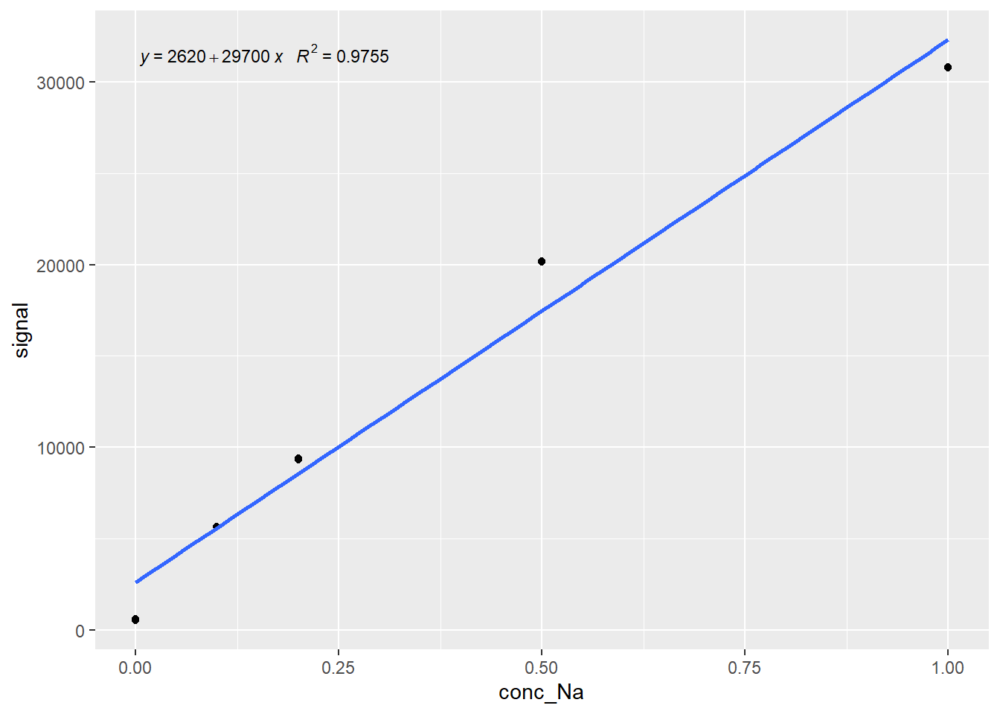

Chapter 7 Modelling: Linear Regression
Modelling is basically math used to describe some type of system, and they are a forte of R, a language tailor made for statistical computing… Every model has assumptions, limitations, and all around tricky bits to working. There is no shortage of modelling in a myriad of context, but in this chapter we’ll discuss and break down the most common model you’ll encounter, the linear regression model, in the most common context, the linear calibration model, using the most common funciton, lm().
You have probably encountered the linear regression model under the pseudonmy “trendlines,” most likely geenrated by Excel’s “add trendline option” (as in CHM135). While the models we’ll be constructiong with lm() work much the same mathematically, unlike Excel, R returns alllll of the model outputs. Correspondingly, it’s easy to get lost between juggling R code, the seemingly endless model outputs, and keeping yourself grounded in the real systeyms you’re attempting to model.
To this end, this chapter is broken into the following parts:
- Modelling theory where we briefly touch opon what model is being calculated.
- Modelling in R where we provide a boilerplate template for how to calculate models in R.
- [Understanding and Visualizing Models] where we explore our model results.
- [Calculating Concentration] where we use our model to calculate the concentrion.
7.1 Modelling Theory
The linear calibration model relates the response of an instrument to the value of the measurand. The measurand is simply what we’re measuring, often the concentration of an analyte. So we use the measurand, which we can control via preparation of standards from reference material as the independent variable, with the instrument output being the dependent variable (as instrument response varies with concentration). Altogether we’re:
- Measuring the instrument response of standards of known concentration and samples of unknown concentration.
- Calculating the linear calibratin model (i.e. line of best fit) through our standards.
- Using the measurement model to calculate the concentration in our unknown from their respective instrument response.

Figure 7.1: Linear calibration model; figure modified from Hibbert and Gooding (2006).
Before we can calculate concentrations, we need a measurement model. In other words, an equation that relates instrument response to sample concentration (or other factors). For simple linear calibration, we use:
\[ y = a + bx\]
Where:
- \(y\) is the instrument response
- \(x\) is the independant variable (i.e. sample concentration)
- \(a\) and \(b\) are the coefficients of the model; otherwise known as intercept and slope, respectively.
We’ll gloss over some of the more technical aspects of modelling, and discuss other in more detail below. For now, know that:
- We’re assuming our linear model is correct (i.e. the instruments actually responds linearly to concentration).
- All uncertainties resies in the dependant variable \(y\) (i.e. no errors in preparation of the standards).
- The values of \(a\) and \(b\) are determined by minimizing the sum of the residuals squared.
- The residuals are the difference between the actual measured response and wehre it would be if it were on the calibration line.
Once we have our line of best fit, we can calculate the concentration of our unknown sample \(i\), from it’s measured response \(y_i\) by:
\[ x_i = \frac{y_i ~-~b}{a}\]
There is more going on under the hood then what we’re describbing here, but this should be enough to get you up and running. If you would like a greater breakdown of linear calibration modelling, we suggest you read Chapter 5 of Data Analysis for Chemistry by Hibbert and Gooding. An online version is accessible via the Univerity of Toronto’s Library. Also there is no reason the instrument response must be linear. In fact, we spend a great deal of time arranging our experiment to that we land in the ‘linear range.’ For details on non-linear modelling in R see Non-Linear Regression
7.2 Modelling in R
Now that we have a rough understanding of what we’re trying to do, let’s go over how to calcualte linear regression models in R. Note model is a general term, in this situation we’ll be calculating a calibration curve. All calibration curves are models, but not all models are calibration curves.
For our example dataset we’ll import a dataset consisting of four analytical standards of sodium plus a calibration blank all run in triplicate. The standards were measured via flame atomic emission spectroscopy (FAES). Let’s import the FAES calibration results we saw in [Transform: dplyr and data manipulation]. As we’ve already seen, our data is composed of four standards and a blank analyzed in triplicate. Since we’re focusing on modelling, we’ll treat the blank as a standard in our model fitting. So let’s import our dataset:
# Importing using tips from Import chapter
FAES <- read_csv(file = "data/FAESdata.csv") %>%
pivot_longer(cols = -std_Na_conc,
names_to = "replicate",
names_prefix = "reading_",
values_to = "signal") %>%
separate(col = std_Na_conc,
into = c("type", "conc_Na", "units"),
sep = " ",
convert = TRUE) %>%
mutate(type = "standard")
DT::datatable(FAES)And let’s quickly plot our data. You should always visualize your data before modelling, especially for linear calibration modelling. Unlike statistical modelling. Vizualing your data is the easiest way to spot trends and gross errors in your data.
ggplot(data = FAES,
aes(x = conc_Na,
y = signal)) +
geom_point()
7.2.1 Base R Linear Model
R’s base lm() function for linear regression is excellent, but it’s outputs have some messy quirks. It’s easier to show that, so let’s calculate the linear relationship between the signal as a function of conc_Na:
lm_fit <- lm(signal ~ conc_Na, data = FAES)
lm_fit##
## Call:
## lm(formula = signal ~ conc_Na, data = FAES)
##
## Coefficients:
## (Intercept) conc_Na
## 2615 29707Reading the code above (recall that we’re reading it from right to left because it’s base R):
- We’re taking the FAES data we created earlier;
data = FAES - We’re comparing
signal(the dependent, y, variable) toconc_Na(the independent, x, variable) via the tilde~. The way to read this is: “Signal depends on concentration”. - We’re comparing these two variables using the
lm()function for generalized linear models. - All of the model outputs are stored in the
lm_fitvariable.
As we can see, the model outputs are pretty brief and not much more than Excel’s outputs. We can use summary() to extract more information to better understand our model:
summary(lm_fit)##
## Call:
## lm(formula = signal ~ conc_Na, data = FAES)
##
## Residuals:
## Min 1Q Median 3Q Max
## -2112.78 -1528.53 70.51 821.50 2718.20
##
## Coefficients:
## Estimate Std. Error t value Pr(>|t|)
## (Intercept) 2615.1 665.2 3.931 0.00172 **
## conc_Na 29707.2 1304.5 22.772 7.34e-12 ***
## ---
## Signif. codes: 0 '***' 0.001 '**' 0.01 '*' 0.05 '.' 0.1 ' ' 1
##
## Residual standard error: 1824 on 13 degrees of freedom
## Multiple R-squared: 0.9755, Adjusted R-squared: 0.9737
## F-statistic: 518.6 on 1 and 13 DF, p-value: 7.341e-12Now we have a lot more information from our model (don’t worry about what everything means, it’s discussed further in Section 3. For now, understand that it’s a hot mess.
7.2.2 Cleaning up model ouputs
summary() provides a decent overview of our model’s performance, but the outputs are difficult to work with. Let’s turn to the broom() package to clean up our model outputs.
library(broom)
calCurve <- FAES %>%
group_by(type) %>%
nest() %>%
mutate(fit = map(data, ~lm(signal ~ conc_Na, data = .x)),
tidied = map(fit, tidy),
glanced = map(fit, glance),
augmented = map(fit, augment)
)
calCurve## # A tibble: 1 x 6
## # Groups: type [1]
## type data fit tidied glanced augmented
## <chr> <list> <list> <list> <list> <list>
## 1 standard <tibble [15 x ~ <lm> <tibble [2 x ~ <tibble [1 x 1~ <tibble [15 x ~Things look a bit more complicated than our earlier example, so let’s break down our code line by line:
- We’re taking the
FAESdataset that we created earlier. group_by(type)groups all rows bytype, in this situation we have only one type:standard.nest()collapses everything other than thetypecolumn into smaller dataframes. In this situation, all other information is stored as atibbleunder thedatacolumn; this is the data used to calculate the linear model.- Withing the
mutatefunction, we’ve created four columns:fit,tidied,glanced, andaugmented.
And it’s these columns that contain our cleaned up model outputs. fit contains the raw output from the linear regression model for signal as a function of conc_Na using the lm() function. The output is in the form of a list, similar to what summary() gave us above. Again, this is exceptionally messy, hence why we used the tidy(), glance(), and augment() functions from the broom package . map() just means we’re applying the function tidy() to the individual output list created by lm() and stored in the fit column. Note that the tidy(), glanced(), and augmented outputs are tibbles. So we now have a tibble containing specific model output values (i.e. (Intercept)), lists (i.e. fit), and tibbles (tidied). This is known as **nested data*. We’re no longer in Kansas anymore…
We’ll break down what each function did below. Keep in mind however that lm() is used for a variety of statistical tests, and consequently has many assoscaited outputs. Some are essential, others are useful, and some are useless for linear calibration. There are also many ways to use these additional model ouputs to calcualte outliers, etc. but you shouldn’t have any outliers in your calibration model. Don’t rely on statistics to bail you out of poor chemical technique.
7.2.3 Glanced outputs
Anyways, let’s take a look at our model results. The glanced tibble contains “…a concise one-row summary of the model. This typically contains values such as R^2, adjusted R^2, and residual standard error that are computed once for the entire mode”[^linear-regression-1] Because the data is nested, we’ll need to use unnest() to flatten it back out into regular columns:
glanced <- calCurve %>%
unnest(glanced)
# DT is to make interactive tables for the book.
DT::datatable(glanced,
options = list(scrollX = TRUE))What you see here is a bit more than what you’d get from Excel’s ‘line-of-best fit’ output. In brief, :
type,data,fit,tidied, andaugmentedare columns we’ve created earlier.r.squaredis a statistical mesure of fit that indicates how muich variation of a depdendent bvariable is explained by the independent variable. The closerr.squaredis to 1, the more variance is captured by the model.adj.r.squaredis the same asr.squaredin this situation. This is becauser.squaredwill always increase if we add more exploratory variables to our model; theadj.r.squaredaccounts for the number of exploratory variables used in the model.- In our case we only have one exploratory variable, hence they’re aproximately the same.
- The other columns are different measurements of goodness-of-fit and hypothesis testing of the model. See Further reading.
7.2.4 Tidied outputs
But what about the slope and the intercept? After all, that’s what we need to calculate the concentration in our unknowns. Let’s take a look at tidied from the tidy() function which constructs a tibble that summarizes the model’s statistical findings. This includes coefficients and p-values for each term in a regression:]
# storing because we'll use it later on.
tidied <- calCurve %>%
unnest(tidied)
# DT is to make interactive tables for the book.
DT::datatable(tidied,
options = list(scrollX = TRUE))Again, a lot more to unpack compared to Excel. That’s because the lm() function in R calculates a generalized linear model. lm() performs a linear regression model, which we normally think of as an equation of the form \(y= a + bx\) as discussed earlier. But, regression models can be expanded to account for multiple variables (hence multiple linear regression) of the form:
\[y = \beta _{0} + \beta _{1} x_{1} + \beta _{2} x_{2} ... \beta _{p} x_{p}\]]
where,
- \(y\) = dependent variable
- \(x\) = exploratory variable; there’s no limit how many you can input
- \(\beta _{0}\) = y-intercept (constant term)
- \(\beta _{p}\) = slope coefficient for each explanatory variable
With our linear calibration model, we only have one input variable for our model (conc), so the above formula collapses down to \(y = \beta _{0} + \beta _{1} x_{1}\). So looking at our tidied model outputs:
- each row corresponds to a model coefficient (under the
termcolumn). - For each modelling parameter, we’re provided an estimate of it’s numerical value:
estimate. These are the values we’ll use to calculate concentration. std.errormeasures how precicely the model estimates the coefficient’s unknown value; smaller is better.p.valueis a indication of the significance of a model coefficient; the closer to zero the better.- If we were to use multiple parameters in our model (eg. concentration and temprature) we could use the
p.valueto determine if a given coefficient was useful for our model.
- If we were to use multiple parameters in our model (eg. concentration and temprature) we could use the
We can extract the value of the model coefficients for subsequent calculations as follows:
intercept <- as.numeric(tidied[1,5])
slope <- as.numeric(tidied[2,5])
paste("The equation of our calibration curve is: y = ", slope, "x + ", intercept, sep="")## [1] "The equation of our calibration curve is: y = 29707.1701380368x + 2615.11945030675"7.2.5 Augmented outputs
Finally let’s take a look at the outputs of the augment function:
# storing because we'll use it later on.
augmented <- calCurve %>%
unnest(augmented)
# DT is to make interactive tables for the book.
DT::datatable(augmented,
options = list(scrollX = TRUE))As you can see, augment() adds columns to the orignal data that was modeled. For our purposes we’re interested:
signalandconc_Na, the original data used in our model..fitted, the predicted value of the point according to our calcualted model..resid, the residiuals of that point (different between measured and fitted values.)- The other parameters are different measuremmtns of the influence of each point on the model fitting. They can be used to detect outliers; see Further reading
7.2.6 Why we approach modelling this way
You may be wondering why we’ve seemingly overcomplicated a simple enough procedure. Fair enough, we’ve showcased an analysis with a simple data set. However, as you progress in your studies you’ll be quantifying many compounds, often at the same time in the same instrument runs. If you organize your data in a tidy format, you can plot calibration curves for all of your compounds with the same block of code. Essentially you use group_by() to group your data by compound/element. Subsequently, the same code is expandable from 1 compound to as many as you can ever hope to quantify in one shot. So for upper year labs where you’re analyzing tens of compounds (cough CHM410 Dust Lab) you can generate calibration curves for all your compounds at once.
7.3 Visualizing model
At the top of the chapter we plotted out standards to visualize a linear trend. Visualizations is an essential component when calculating calibration curves, and indeed our standards apepared to follow a linear trend, which was corroborated by the model we calculated above. However, for publications/reports you’ll need to create a plot with both your standards and model with the displayed equation, so below is a bit of stock code you can use as a starting point to create these plots. Note that it requires the ggpmisc package to display the equation:
ggplot(data = FAES,
aes(x = conc_Na,
y = signal)) +
geom_point() +
geom_smooth(method = 'lm', se=F) +
ggpmisc::stat_poly_eq(formula = y ~ x, # formula uses aesthetic names
rr.digits = 4, # reported digits of r-squared
aes(label = paste(..eq.label.., ..rr.label.., sep = "~~~")),
parse = TRUE, size = 3) ## `geom_smooth()` using formula 'y ~ x'
7.3.1 Vizualizing residuals
As stated earlier, residuals are the difference between measured and fitted values. They’re often overlooked in linear calibration and folks are hot to plot a straight line through their data. This has the unintended effect of fooling your eyes into thinking your data is linear. Consequently, it is always a good idea to plot the residuals of your model as this will magnify any trends or discrepencies of your calibration model. A good linear model will have the residuals randomly distributed about zero. Other examples of patterns in residuals are shown below:
Figure 7.2: Example residual patterns; figure adapted from Hibbert and Gooding (2006).
- Normally distrubuted residuals is satisfactory for linear modelling. Note the relatieyl small magnitute of the reisudals.
- Curvatuyre throught range results from an isntrument become saturated. Consequently, the linear model will ‘cut’ thourgh the curve. This is a good indication that you’ll need to either breakdown your calibration curve into two or more parts or utilize a non-linear model.
- Heteroscedasticity means the variance of the response is proportional to the concentration. This is often the case in instrumental analysis. See Weighing below.
- Outliers shouldn’t exist in your calibration plot, nevertheless, a plot of residuals can readily highlight an outlier point.
7.3.2 Plotting residuals
To plot residuals, we use our augmented dataset from above, and simply create a plot of the independant variable vs. the residuals. Here we plot the FAES calibration model and it’s residuals. Note that the residuals indicate curbature throughout the range. We may have over extended our calibration range outisde of the linear range of our instrument.
a <- ggplot(data = FAES,
aes(x = conc_Na,
y = signal)) +
geom_point() +
geom_smooth(method = 'lm', se=F) +
ggpmisc::stat_poly_eq(formula = y ~ x, # formula uses aesthetic names
rr.digits = 4, # reported digits of r-squared
aes(label = paste(..eq.label.., ..rr.label.., sep = "~~~")),
parse = TRUE, size = 3)
b <- ggplot(data = augmented,
aes(x = conc_Na, y = .resid)) +
geom_point()
ggpubr::ggarrange(a, b, ncol = 2, labels = c("A", "B"))## `geom_smooth()` using formula 'y ~ x'Figure 7.3: (A) linear calibration model and (B) plot of model residuals.
7.4 Further reading
As previously stated, we highly recomend reading Chapter 5: Calibration from Data Analysis for Chemistry by Hibbert and Gooding for a more in-depth discussion of linear calibration modelling. The book can be accessed online via the University of Toronto’s Library.
For a greater disucssion on modelling in R, see Modelling in R for Data Science.
7.5 Going deeper with modelling
7.5.1 Weighing
As shown above, you’ll often find that your calibration data is heteroscedastic, meaning the variance increases with the concentration. This leads to leverage of your line-of-best fit, as it is ‘pulled’ by one way or another by the higher concentration standards then the lower. You can assign ‘weights’ (how much a point impacts the model) in R, although you’ll need to justify the validity of your approach. A common approach however, is to weight each standard by \(\frac{1}{x^2}\). This ensures that samples with higher concentration impact the line less, and vice-versa weith low-concentration standards.
To utilize weight in R, we need to calculate the weigh prior to modelling, and subsequently specify the weights column
# note that our blank has a concentration of 0, hence infinite weight.
# we need to remove it to weight our data.
FAESweighed <- FAES %>%
filter(conc_Na > 0) %>%
mutate(wght = 1/(conc_Na^2))
weightedCalCurve <- FAESweighed %>%
group_by(type) %>%
nest() %>%
mutate(fit = map(data, ~lm(signal ~ conc_Na, data = .x, weights = wght)),
tidied = map(fit, tidy),
glanced = map(fit, glance),
augmented = map(fit, augment)
) %>%
unnest(augmented)
ggplot(data = weightedCalCurve,
aes(x = conc_Na, y = signal)) +
geom_point() +
geom_smooth(method = 'lm', se=F, colour = "red", label = "unweighed") +
geom_smooth(method = 'lm', se=F, colour = "blue",
aes(weight=`(weights)`, label = "weighed")) ## Warning: Ignoring unknown parameters: label## Warning: Ignoring unknown aesthetics: label## `geom_smooth()` using formula 'y ~ x'
## `geom_smooth()` using formula 'y ~ x'